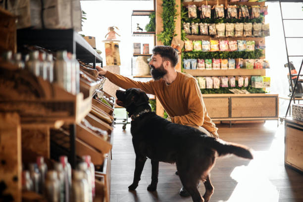
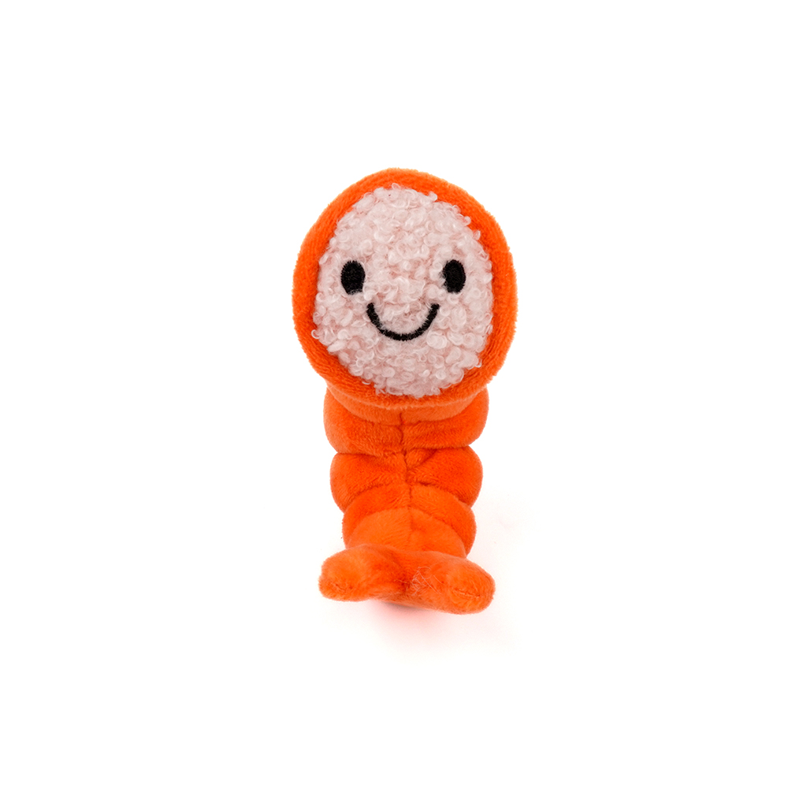
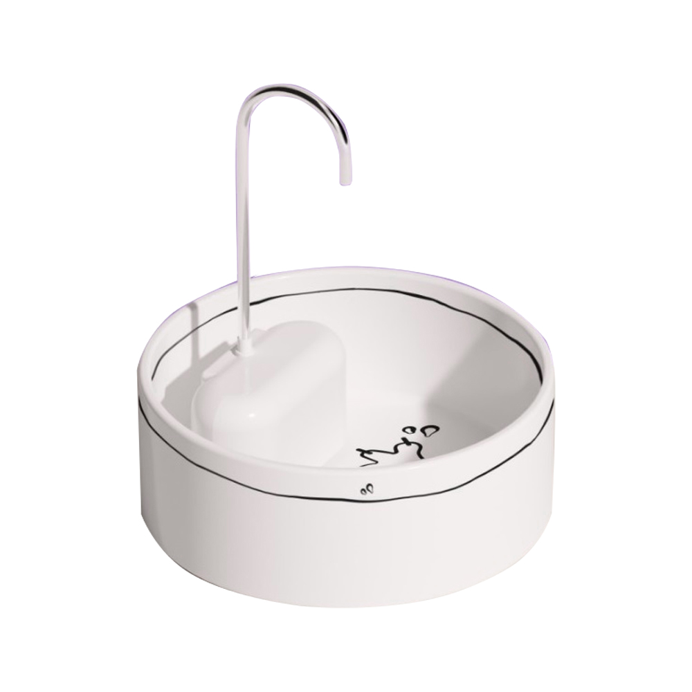
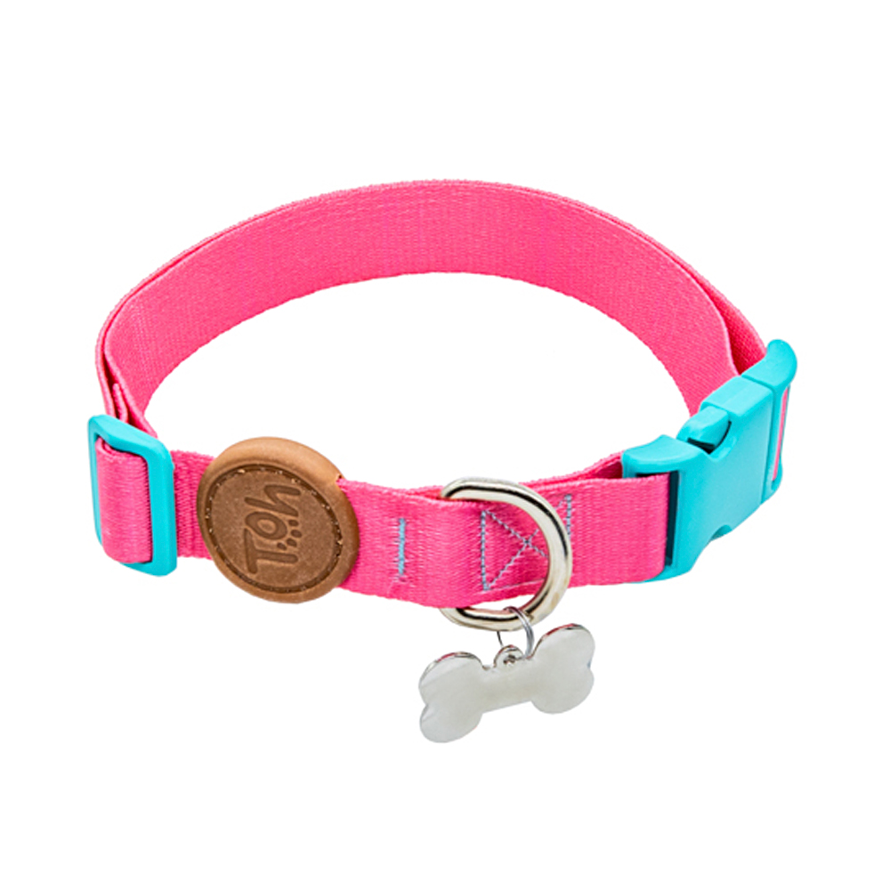
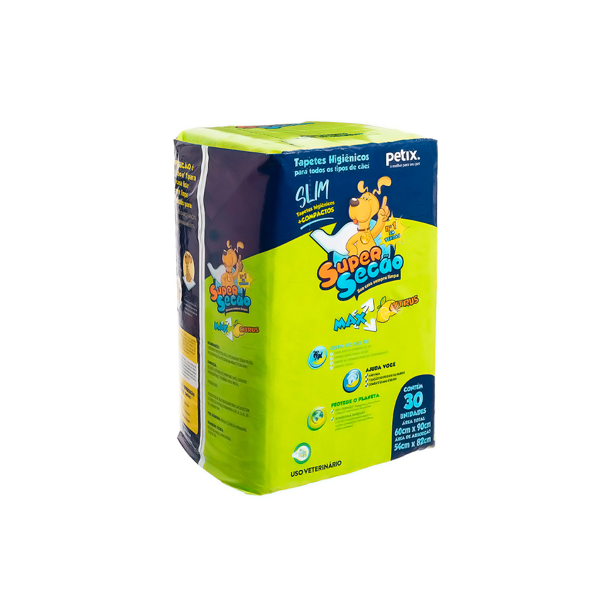
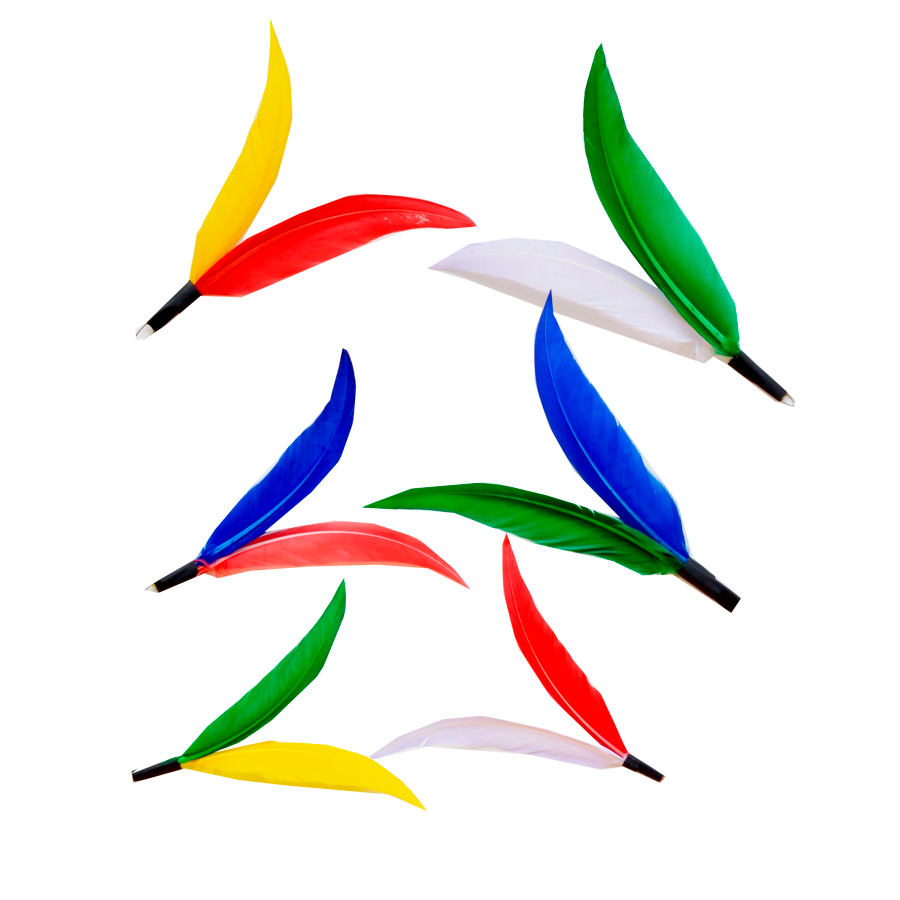
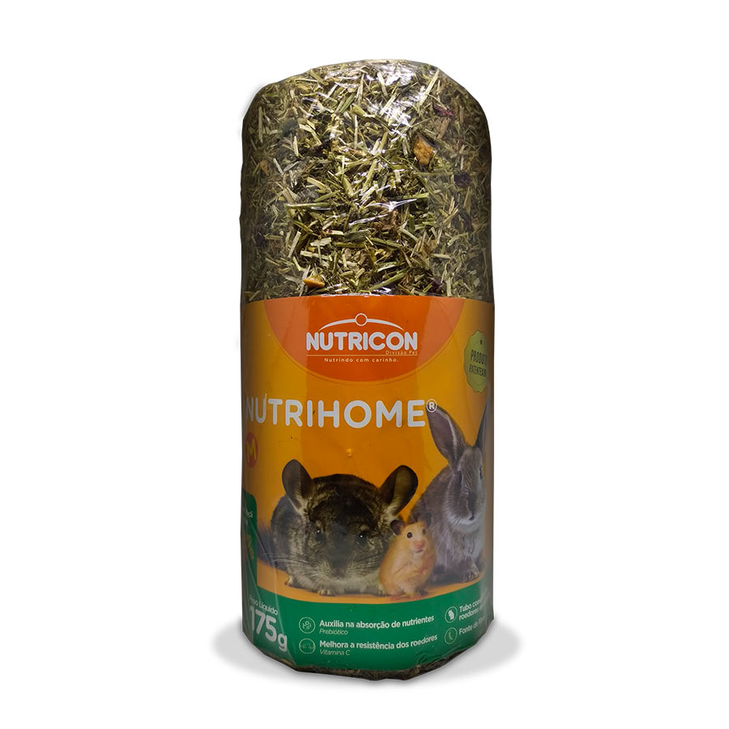
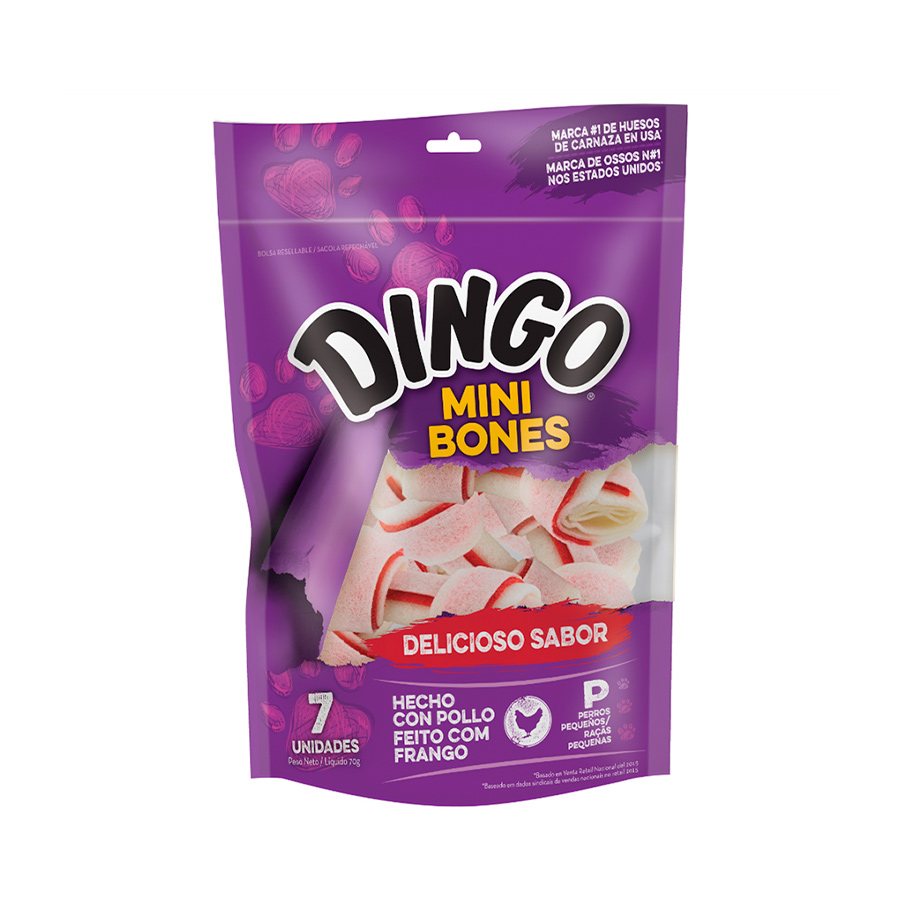
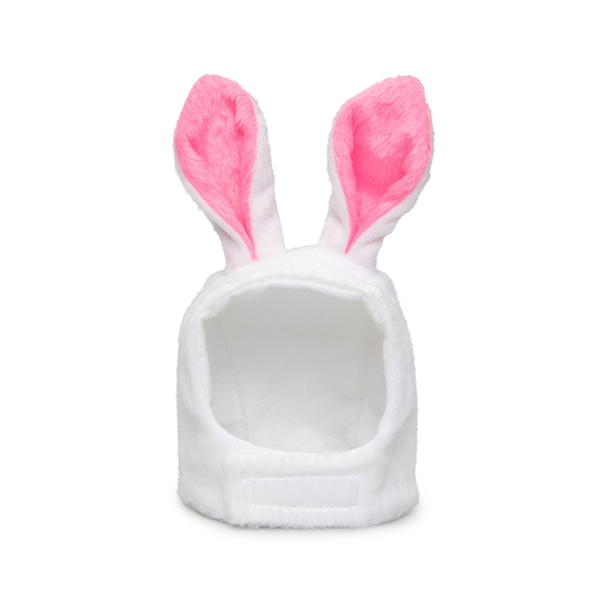

Tapete Higiênico Petz para Cães
O Tapete Higiênico Petz é indicado para cães. Proporciona máxima absorção com extra gel e proteção contra vazamentos.
Produtos de beleza, rações premium e cuidado especial com seu Pet. Confira nossos produtos abaixo agora mesmo!

O Tapete Higiênico Petz é indicado para cães. Proporciona máxima absorção com extra gel e proteção contra vazamentos.

O Brinquedo Spike Camarão de Pelúcia é indicado para cães de pequeno e médio porte. Proporciona entretenimento com pelúcia resistente.

O Bebedouro Fonte de Porcelana é indicado para gatos. Proporciona água fresca, filtrada e corrente o dia todo com total segurança.
O Antipulgas Simparic Trio é indicado para cães. Proporciona proteção contra pulgas, carrapatos e prevenção contra vermes.

A Coleira TOH com Tag ID Fiji é indicada para cães de todos os portes. Proporciona conforto e segurança em passeios com identificação inclusa.
A Areia Higiênica Viva Verde Grãos Finos é indicada para gatos. Proporciona formação rápida de terrões e controle absoluto de odores.

O Tapete Higiênico Super Secão Max Citrus Slim é indicado para cães. Proporciona máxima absorção com suave aroma cítrico para o ambiente.
O Peitoral Petz Waterproof Tech Blue é indicado para cães ativos. Proporciona resistência à água, fácil higienização e ajuste anatômico.

O Brinquedo Pet Games Refil da Varinha Flying é indicado para gatos. Proporciona estímulo ao instinto caçador e entretenimento saudável.

O Tubo Comestível Nutrihome é indicado para pequenos roedores. Proporciona desgaste natural dos dentes e enriquecimento ambiental.

O Osso Dingo Original Mini 100g é indicado para cães de pequeno porte. Proporciona saboroso entretenimento com carne de frango de verdade.

A Fantasia de Coelho Branco Cansei de Ser Gato é indicada para gatos e cães pequenos. Proporciona um visual divertido com tecido macio e confortável.